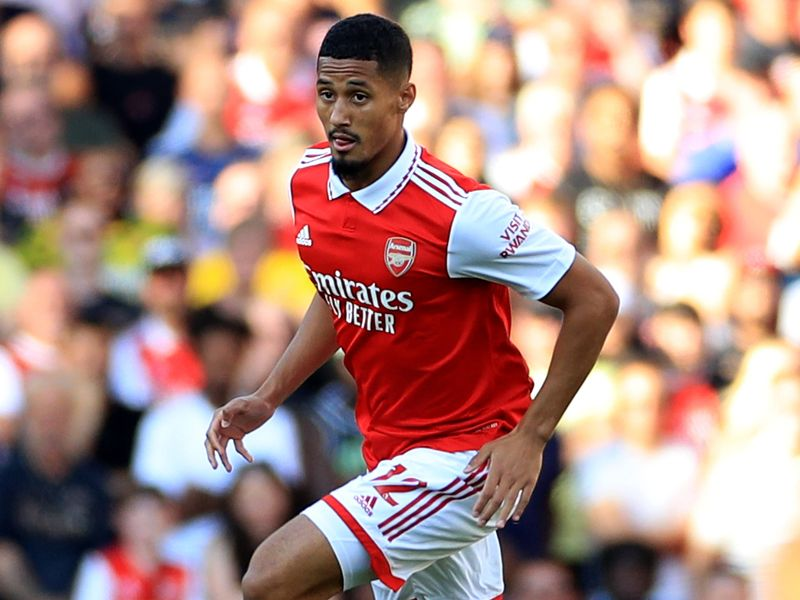

William Saliba
Carriera
William Saliba è un difensore centrale francese nato nel 2001. Cresciuto nelle giovanili del Saint-Étienne, è stato acquistato dall’Arsenal nel 2019. Dopo alcuni prestiti in Francia (tra cui Nizza e Marsiglia), è tornato a Londra nel 2022 imponendosi come titolare. Con le sue prestazioni solide e mature, si è affermato rapidamente come uno dei migliori giovani difensori della Premier League.
Stile di gioco e caratteristiche tecniche
Saliba è un difensore elegante, fisicamente dominante e dotato di grande lettura del gioco. È abile nei duelli aerei, preciso nei tackle e molto sicuro con il pallone tra i piedi. La sua compostezza sotto pressione e la capacità di uscire palla al piede lo rendono ideale per il sistema di gioco impostato da Mikel Arteta. Nonostante la giovane età, mostra una notevole maturità tattica.